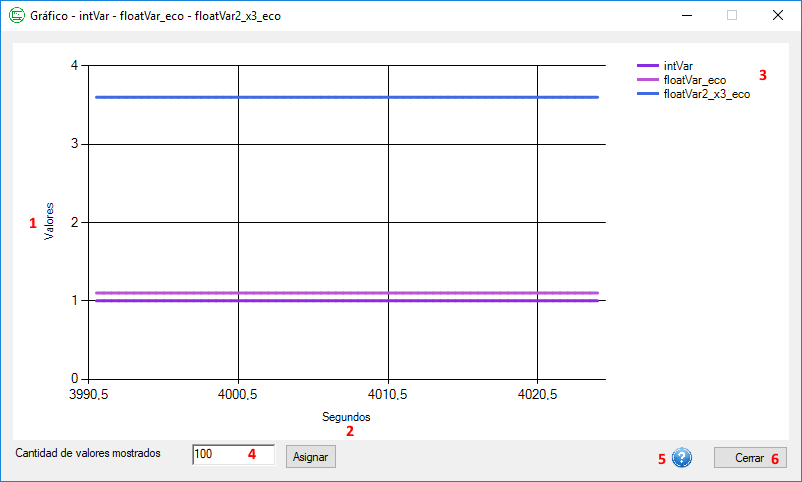

Ayuda para el Formulario Gráficas
A continuación se explicarán los apartados que componen el formulario "Gráficos" de la aplicación Interfaz para Planta Piloto.
Ventana "Gráfico"

- Eje Y: muestra los valores que alcanzan las variables graficadas.
- Eje X: muestra el momento en segundos desde que la placa ha sido encendida.
- Lista de variables graficadas.
- Cantidad de valores que se quieren mostrar de las variables.
- Botón de acceso a la ayuda de este formulario.
- Botón para cerrar la ventana.